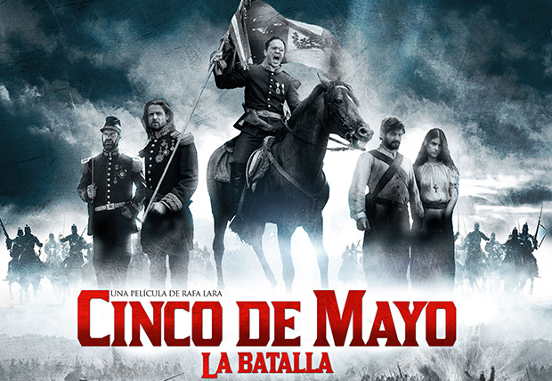
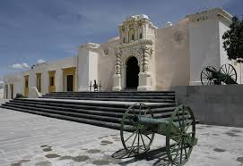
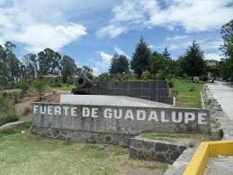
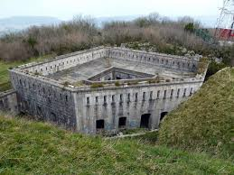
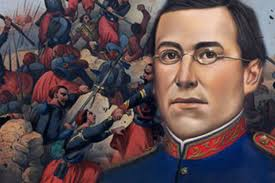
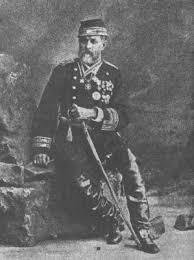
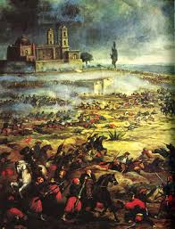
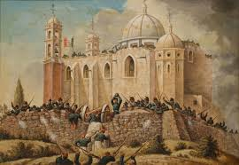

Batalla Del 5 De Mayo De 1862

Aplicacion Dos
ULISES FLORES GRANDE
Fuerte De Loreto
Ubicado en el antiguo cerro Acueyametepec se encuentra el Fuerte de Loreto que actualmente funciona como Museo de la no intervencion. Desde la fundacion de la ciudad de Puebla este cerro, al igual que el de Guadalupe, era conocido como de Belen por que ahi se encontraba una ermita dedicada a esa advocacion. En 1816 las construcciones que se encontraban fueron fortificadas para resistir las fuerzas de los independentistas, es decir se les puso revestimientos de cal y una muralla. Posteriormente fungio como polvorin.
Cabe senalar que durante la batalla del 5 mayo de 1862 en contra de los franceses en este fuerte no se realizaron acciones, pero en 1930 se le declaro como propiedad de la nacion al servicio del pueblo y fue hasta 1936 cuando se convirtio en Museo de Guerra.
El Fuerte de Lorerto es tambien el museo de la NO intervencion. Con la conmemoracion del centenario de la Batalla del 5 de mayo en 1962 este museo se amplio y se le colocaron nuevas piezas y objetos, en general se renovo la museografia. El apoyo del presidente Adolfo Lopez Mateos fue crucial en el museo ya que lo convirtio en Museo de la No intervencion y lo remodelo completamente.
Actualmente cuenta con seis salas: en la capilla al costado del inmueble se exhiben banderas de los diferentes paises de America Latina y sobre todo los simbolos patrios de Mexico (la Bandera, el Escudo y el Himno Nacional), en esta seccion tambien podemos encontrar un mural de Ramirez Osorio en el que se representan a los hombres que intervinieron en la guerra de reforma. En la sala numero dos podemos encontrar documentos que nos muestran la situacion politica y economica en la que vivia Mexico durante la segunda mitad del siglo XIX, para asi poder identificar las causas de la intervencion francesa, por otro lado tambien se encuentran mapas en los que podemos conocer la geografia poblana de la epoca.
La sala tres se encuentra dedicada al General Ignacio Zaragoza y en la cuatro podemos observar los uniformes de los soldados que combatieron en la Batalla del 5 de mayo. En la Sala cinco podemos descubrir todos los aspectos relacionados con el ejercito frances y el apoyo que recibieron de los conservadores mexicanos. Este museo esta abierto de martes a domingo de 9:00 a 18:00 horas y los domingos la entrada es gratuita.


Fuerte De Guadalupe
Ubicado en el antiguo cerro de nombre prehispanico Acueyametepec, se encuentra el Fuerte de Guadalupe, formando parte como un atractivo mas de la Unidad Civica 5 de Mayo en Puebla. Su direccion actual es Calzada Ejercito de Oriente s/n Unidad Civica 5 de mayo y se encuentra abierto de martes a domingo de 9:00 a 17:45. Este inmueble es de suma importancia para la Historia de Puebla, ya que en ese lugar fue donde se peleo y se obtuvo la victoria de la batalla del 5 de Mayo en 1862 en contra del ejercito frances.
Haciendo una revision a la historia de este inmueble se conoce que con la llegada de los espanoles al valle de Puebla y la posterior fundacion de la ciudad (en abril de 1531) se erigio una ermita de adobe y teja bajo la advocacion de San Cristobal en donde actualmente se ubica el Fuerte de Guadalupe.
En 1580 la ermita paso a manos de los padres betlemitas quienes le anexaron un pequeno hospital, por lo tanto se empieza a conocer como el cerro de Belem porque la capilla estaba dedicada a la Senora de Belem.
A mediados del siglo XVIII un temporal que azoto a la ciudad destruyo la pequena iglesia y posteriormente Luis Osorio solicito su reconstruirla; se termino en 1773 pero bajo la advocacion de la Virgen de Guadalupe.
Con el paso del tiempo, se empezo a usar como polvorin y en tiempos independentistas sus muros fueron reforzados para resistir las fuerzas insurgentes.
En 1862 se construyo el Fuerte, se rodeo con un foso y el templo se reforzo mas, para poder resistir la intervencion francesa. Es conocido que Mexico gano la batalla del 5 de mayo en 1862, pero tambien debemos saber que en marzo de 1863 los franceses sitiaron la ciudad de Puebla iniciando lo que historicamente se conoce como el Segundo Imperio o el tiempo de Maximiliano de Habsburgo como emperador de Mexico.
Con la batalla y el sitio de Puebla, el fuerte de Guadalupe quedo destrozado, la iglesia se perdio completamente y actualmente solo se conservan algunos muros, el foso y alguna pieza de artilleria como muestra museografica.
En 1930 el Fuerte de Guadalupe como el de Loreto fueron declarados propiedad de la nacion al servicio del pueblo y actualmente es un lugar para visitar y descubrir la Historia de Puebla.


Lugares Principales
Lugares Donde Se Desarrollo La Batalla Del 5 De Mayo De 1862
Antecedentes
Los Fuertes Son Conciderados Los Lugares mas importantes donde se dearrollo la Batalla Del 5 De Mayo De 1862
- Los fuertes de Loreto y Guadalupe son unas antiguas edificaciones militares que se encuentran en la ciudad de Puebla. Originalmente se trataba de capillas construidas en lo alto de un cerro Acueyametepec, que fueron reconstituidas a principios del siglo XIX como fortificaciones con finalidades militares
- Los fuertes se ubican en la zona nororiente de Puebla, en un cerro conocido como Acueyametepec durante la epoca prehispanica. En el siglo XVI, frailes franciscanos construyeron una ermita en la cara este del cerro; mas tarde, esa edificacion se expandio a templo bajo la advocacion de San Cristobal, que finalmente paso al control de los padres betlemitas, por lo que a la zona se le conocio como cerro de Belen. En la cara oeste se erigio otro templo, al cual se le asigno la advocacion de la Virgen de Loreto, mientras que el templo originario paso a dedicarse a la Virgen de Guadalupe.
En octubre de 1861, Francia, Inglaterra y Espana firmaron la Convencion de Londres, en la cual se comprometieron a enviar contingentes militares a Mexico, la deuda era de 80 millones de pesos; 69 millones para los ingleses, 9 millones para los espanoles y 2 millones para Francia. La Alianza Tripartita amenazo al presidente Benito Juarez con invadir el pais si no se saldaba por completo las deudas con los tres paises europeos.
Juarez responde con un exhorto para lograr un arreglo amistoso, en un principio la Alianza Tripartita acepto el llamado al dialogo. Sus representantes se reunieron con Manuel Doblado, ministro de Relaciones Exteriores, quien consiguio que Juan Prim, representante espanol, y Lord John Russell por Inglaterra se retiraran; lograron negociar por la via diplomatica los terminos y condiciones en los que se pagaria posteriormente la deuda. Es entonces cuando Juarez creo al Ejercito de Oriente y designo al general Ignacio Zaragoza al frente de este.
El 5 de marzo, cuando aun se realizaban las negociaciones, llego a Veracruz un contingente militar frances bajo el mando de Charles Ferdinand Latrille, conde de Lorencez. A finales de abril, Lorencez se puso en marcha, junto con sus efectivos, hacia Puebla, con el fin de avanzar para conquistar la Ciudad de Mexico.
Ignacio Zaragoza
Ignacio Zaragoza nacio en el poblado de La Bahia del Espiritu Santo, en el estado de Coahuila y Texas, hoy Goliad. Fue el segundo hijo de Miguel Zaragoza Valdes, de Veracruz, y Maria de Jesus Seguin Martinez, deSan Antonio de Bexar, esta ultima pariente de Juan Jose Erasmo Seguin. Cuando los rebeldes texanos, apoyados por los Estados Unidos de America, ganaron la Guerra de independencia de Texas, Miguel Zaragoza, que era soldado de infanteria, se mudo con su familia desde la ciudad Presidio de La Bahia de Espiritu Santo (hoy Goliad, Texas), donde habia nacido su hijo Ignacio, a la ciudad de Matamoros en 1834, y posteriormente, en 1844, a la ciudad de Monterrey, donde Ignacio entro al seminario, estudios que abandono en 1846, convencido de que no tenia vocacion sacerdotal.
Intervencion estadounidense
Cuando los Estados Unidos de America invadieron Mexico, en la conocida intervencion estadounidense en Mexico, el joven Zaragoza intento alistarse como cadete, pero fue rechazado.
Revolucion de Ayutla.
Al iniciarse la Revolucion de Ayutla en contra de Antonio Lopez de Santa Anna, Zaragoza se adhirio a ella, y desde aquel momento milito al lado de los liberales. En 1853 se unio al ejercito de Nuevo Leon con el rango de sargento, y cuando su regimiento fue incorporado al Ejercito Mexicano, fue promovido a capitan.
Guerra de Reforma
En 1860, Zaragoza y un pequeno numero de combatientes lucharon a favor de la Constitucion de 1857. Zaragoza derroto a las tropas de Leonardo Marquez, situadas en Guadalajara, Jalisco. Poco tiempo despues, bajo las ordenes del general Jesus Gonzalez Ortega participo en la batalla de Calpulalpan, con la que se dio termino a la Guerra de Reforma. A las ordenes del presidente Benito Juarez, Zaragoza sirvio como ministro de Guerra desde abril hasta octubre de 1861.
Segunda Intervencion Francesa.

General de Division, Ignacio Zaragoza, 1862
Cuando las fuerzas francesas de Napoleon III invadieron Mexico para imponer como emperador a Maximiliano de Habsburgo, Zaragoza, con el rango de general y al mando del Ejercito de Oriente, las enfrento en Acultzingo en la llamada Batalla de Las Cumbres, el 28 de abril de 1862, siendo obligado a retroceder. Zaragoza comprendio la posicion defensiva y favorable que tenia la ciudad de Puebla, paso obligado para ir a la Ciudad de Mexico.
Al amanecer del 5 de mayo de 1862, el Gral. Ignacio Zaragoza arenga a sus soldados: "Nuestros enemigos son los primeros soldados del mundo, pero vosotros sois los primeros hijos de Mexico y os quieren arrebatar vuestra patria". Ordena a Miguel Negrete dirigir la defensa por la izquierda; a Felipe Berriozabal por la derecha y a Porfirio Diaz que este junto a el. Tras varias horas de lucha, la batalla no se decide, se enfrentan cuerpo a cuerpo mexicanos y franceses, finalmente, los invasores se retiran mientras Zaragoza grita: "Tras ellos, a perseguirlos, el triunfo es nuestro".El ejercito frances considerado el mejor del mundo en ese tiempo, un ejercito profesional, con la fama de haber ganado batallas en Argelia (Legion Extranjera) y de haber entrado al rio Mekong en la Indochina Francesa (hoy Vietnam), al mando del General Conde de Lorencez, era derrotado estrepitosamente. Los indigenas zacapoaxtlas, con machete y cuchillo en mano, los persiguieron y acabaron con muchos soldados franceses, suavos(tropa elite del ejercito frances), belgas, que formaban parte de la invasion. Cuando en Europa se supo la noticia de la derrota del ejercito frances, el mejor del mundo en Mexico, hubo dolor, terror e histeria, dado que ningun pais habia humillado tanto a los franceses. Tenian 50 anos que el ejercito frances no era derrotado, dado que la ultima vez habia sido en la Batalla de las Naciones (Waterloo) en el ano 1815 con la derrota de Napoleon Bonaparte. Se elevaron voces de protesta por los intelectuales de ese pais, politicos que estaban en contra de la invasion a Mexico y pueblo en general.
El informe que el general Ignacio Zaragoza rindio sobre la Batalla de Puebla al Secretario de Guerra Miguel Blanco Muzquiz fue breve y significativo: "Las armas nacionales se han cubierto de gloria. Las tropas francesas se portaron con valor en el combate y su jefe con torpeza".El presidente Benito Juarez seria informado mas tarde.
Miguel Negrete
TEPEACA DE NEGRETE, Pue.- El tepeaquense Miguel Negrete Novoa, considerado el principal heroe despues del General Ignacio Zaragoza en la Batalla del 5 de Mayo de 1862 contra los franceses, de quien el proximo 8 de mayo se cumpliran 189 anos de su nacimiento, en esta ciudad se le ha recordado siempre como hijo predilecto, lo demuestran los testimonios historicos del lugar, toda vez que su nombre aqui lo lleva, tanto la calle Negrete Oriente, como el Centro Escolar, su gran monumento ubicado en la Plaza de Armas y su fotografia preside en el palacio municipal.
La vida del general Miguel Negrete Novoa, el unico militar tepeaquense con el grado de General de Division, por solicitud del propio Ignacio Zaragoza en 1862, fue la unica gran figura civil y militar de Tepeaca en el siglo XIX, y que en la actualidad continua siendo una de las principales figuras de la batalla del 5 de Mayo de ese ano, motivo por el que en la LVI Legislatura del Congreso del Estado, hace casi 10 anos, se logro se inscribiera su nombre en letras de oro en el muro de honor de dicho recinto.
Ahora, a casi cerca de 200 anos de su nacimiento en la casa marcada con el numero 101 de la calle Negrete Oriente, en pleno centro de la ciudad de Tepeaca, a unos metros al sur oriente del zocalo, todas las autoridades municipales ofrendan en el sitio el 8 de mayo de cada ano para recordar la gran figura del procer tepeaquense, asi como honores civicos ante su monumento en la plaza de armas, donde el general Miguel Negrete se le recuerda en cada aniversario de su nacimiento como de su deceso, el 1 de enero de cada ano, respectivamente.
La vida del general, Miguel Negrete ha sido una de las mas biografiadas, de acuerdo con distintas fuentes historicas, aseguro el cronista Jose Francisco Jimenez Villa, como por el Consejo de la Cronica que encabeza Rene Huerta Ramales, ambos historiadores que han escrito y hablado sobre la vida y obra del general tepeaquense.
MIGUEL NEGRETE NUNCA SE SINTIO TEPEAQUENSE
El general Miguel Negrete Novoa, considerado como el principal heroe de la Batalla del 5 de Mayo de 1862, junto con Ignacio Zaragoza, nunca se sintio tepeaquense a pesar de haber nacido en este lugar, toda vez que su hijo Doroteo Negrete, en su libro La verdad ante la figura militar de don Miguel Negrete, confirma que por un incidente casual hizo que el nacimiento de Miguel Negrete, tuviese lugar en la ciudad de Tepeaca.
Sin embargo, a pesar de que la partida bautismal existe en la parroquia de San Francisco de Asis, en Tepeaca, el General Miguel Negrete, nunca volvio a su lugar de nacimiento, toda vez que nacio en Tepeaca por mero accidente, aunque nunca olvido su origen humilde, concluye el cronista del lugar, Francisco Jimenez Villa.

EL GENERAL DE DIVISION MIGUEL NEGRETE, A LA NACION
Compatriotas:
Ultimo soldado del ejercito, he concurrido a los combates cuando me ha llamado el deber y la honra de la Republica. Incansable en las luchas por la libertad del pueblo, he arrostrado los peligros mas inminentes, con la seguridad de una conciencia tranquila y la fe ciega en el porvenir.
Combati la administracion del senor Juarez a pesar del gran respeto a ese alto personaje, cuyo renombre ha sido consagrado por la historia, cuando su prolongacion en el gobierno habia roto el apoyo de la opinion y el cimiento de la voluntad nacional. El pueblo me arrebato entonces de las gradas del cadalso: a el debo la vida y a el solo consagro mi existencia.
A la muerte del presidente Juarez, la ley puso en manos de Lerdo la primera magistratura de la Republica: renacieron las esperanzas, la revolucion entrego sus banderas y la nacion toda se puso en expectativa, creyendo que la hora de bienestar habia llegado para la patria.

Personajes Principales
Personajes Principales Que Participaron En La Batalla Del 5 De Mayo
Antecedentes
Quienes lucharon en la batalla del 5 de mayo?
- Si hay alguien destacado entre todos ese es Ignacio Zaragoza, Ministro de Guerra y militar que dirigio el Ejercito Mexicano, quienes, acompanados por un grupo de indigenas -conocidos erroneamente como zacapoaxtlas- se rebelaron en las afueras de la ciudad de Puebla contra las tropas francesas, dirigidas por el conde de Lorencez,Charles Ferdinand Latrille, durante la Segunda Intervencion Francesa en Mexico.
Cercada por una profunda crisis economica, la Republica de Mexico, gobernada por Benito Juarez, se vio obligada a suspender la deuda de mas de 80 millones de pesos que acarreaba con Espana, Inglaterra y Francia. Pese a que los dos primeros paises comprendieran la situacion y aceptaran el acuerdo, desbandando sus tropas hasta que la crisis terminara, al Imperio Frances no le convencieron las condiciones. Los espanoles y britanicos se habian percatado, no en vano, del anhelo soterrado de Francia por conquistar Mexico, para erigir una monarquia estable que apoyara su politica colonial. Tras la ruptura de la union tripartita europea, Francia no tardo en emprender su intento de invasion, frustrada por la mencionada Batalla de la Puebla cuando todo parecia perdido para los mexicanos.
- De Mexico, Ignacio Zaragoza, Felipe Berriozabal, Porfirio Diaz, Santiago Tapia, Ignacio Mejia, Miguel Negrete.
- La Batalla de Puebla fue el 5 de mayo de 1862 y ganamos.
- El Sito de Puebla fue del 16 de marzo al 17 de mayo de 1863 y perdimos.
- Por Francia fue Federico Forey, Aquiles Bazaine, Leonardo Marquez, Juan Nepomuceno Almonte (el hijo de Jose Ma. Morelos y Pavon).
- Por Mexico, Jesus Gonzalez Ortega, Felipe Berriozabal, Porfirio Diaz, Miguel Negrete..
- La Toma de Puebla o Batalla del 2 de Abril fue en 1867 y ganamos.
- Por Francia, Leonardo Marquez.
- Por Mexico, Porfirio Diaz.
- Por lo que durante la Intervencion Francesa en Puebla tuvimos
- La Batalla en 1862
- El Sitio en 1863
- La Toma en 1867
- En las 3 participo Porfirio Diaz.
Causas Secundarias
- De las causas secundarias se destaca el poder para obtener el teritorio de mexico
- Una de las causas es que debido principalmente a la cantidad de deudas, Inglaterra y Espana subscribieron el Convenio de Londres, por el cual se comprometieron a intervenir por el uso de la fuerza en Mexico para reclamar sus derechos como acreedores, mientras tanto el Presidente Benito Juarez declaro suspendidos los compromisos adquiridos y aplazo pagar la deuda a las naciones europeas. Tras desembarcar en Veracruz, Espana e Inglaterra aceptaron las explicaciones mexicanas dadas en los Tratados de La Soledad, los cuales tenian como fundamento, el respeto a la soberania territorial, el reconocimiento de las naciones acreedoras al Estado Mexicano, la entrada al terreno de las negociaciones para llegar a acuerdos en comun, que beneficiaria tanto a la Republica Mexicana, como a los intereses de las potencias invasoras, y por ultimo, se permitiria que los soldados de los tres paises se establecieran en las ciudades mexicanas de Orizaba, Cordoba y Tehuacan durante las negociaciones, debido a lo malsano del clima imperante en el puerto de Veracruz; en caso contrario, los soldados de las tres potencias se retirarian a las costas de Veracruz para asi comenzar las hostilidades.
- El Petroleo no fue una de las mayores causas ya que los demas paises extranjeros contaban con suficiente petroleo
- Una Gran Cantidad de Dinero Que debia mexico con paises extrangeros


Causas Principales
- Debido principalmente a la cantidad de deudas, Inglaterra y Espana subscribieron el Convenio de Londres, por el cual se comprometieron a intervenir por el uso de la fuerza en Mexico para reclamar sus derechos como acreedores, mientras tanto el Presidente Benito Juarez declaro suspendidos los compromisos adquiridos y aplazo pagar la deuda a las naciones europeas. Tras desembarcar en Veracruz, Espana e Inglaterra aceptaron las explicaciones mexicanas dadas en los Tratados de La Soledad, los cuales tenian como fundamento, el respeto a la soberania territorial, el reconocimiento de las naciones acreedoras al Estado Mexicano, la entrada al terreno de las negociaciones para llegar a acuerdos en comun, que beneficiaria tanto a la Republica Mexicana, como a los intereses de las potencias invasoras, y por ultimo, se permitiria que los soldados de los tres paises se establecieran en las ciudades mexicanas de Orizaba, Cordoba y Tehuacan durante las negociaciones, debido a lo malsano del clima imperante en el puerto de Veracruz; en caso contrario, los soldados de las tres potencias se retirarian a las costas de Veracruz para asi comenzar las hostilidades.
- Una Gran Cantidad de Dinero Que debia mexico con paises extrangeros
- De Los tesoros que tenia mexico lo que mas se destacaba eran la gran cantidad de petrole que hay en nuestro pais es por ello que los paises vecinos querian invadir a mexico en ese entonces.
- Antes del 5 de Mayo, el dia 28 de abril de 1862, tuvo lugar un enfrentamiento conocido como la Batalla de las Cumbres entre el Ejercito Expedicionario Frances y el Ejercito Mexicano. En este conflicto hubo cerca de 500 bajas francesas en contra de apenas 50 bajas mexicanas.
- Despues de la Batalla de las Cumbres, el conde de Lorencez conservaba su confianza y mando decirle a Napoleon III que: Somos tan superiores a los mexicanos en organizacion, disciplina, raza, moral y refinamiento de sensibilidades, que le ruego anunciarle a Su Majestad Imperial, Napoleon III, que a partir de este momento y al mando de nuestros 6,000 valientes soldados, ya soy dueno de Mexico.


Causas Principales
Principales Causas Que Antecedieron A La Batalla Del 5 De Mayo
Antecedentes
Las causas de esta batalla fueron muchas
- A las dos y media de la tarde, cuando los mexicanos empezaban a vislumbrar la victoria, Lorencez se dispuso a lanzar el ultimo asalto, dirigiendo a los Cazadores de Vincennes y el Regimiento de Zuavos hacia Guadalupe. Zaragoza dispuso que el Batallon Reforma de San Luis Potosi saliera en auxilio de los fuertes.
- Varios embates franceses fueron repelidos por la resistencia del Ejercito Mexicano como es el caso de los zuavos (originarios de Argelia), el regimiento de elite de la infanteria francesa, quienes iniciaron un cauteloso ascenso hacia el Fuerte de Guadalupe, pero fueron recibidos con bayonetas y obligados lo franceses a retroceder.
- Otros generales mexicanos tambien participaron en la defensa de Puebla como es el caso de las tropas de Oaxaca dirigidas por Porfirio Diaz. El centro de la linea lo defendio Francisco Lamadrid con las tropas del Estado de Mexico y San Luis Potosi. La izquierda se apoyo en el cerro de Acueyametepec, ubicado en el norte de la ciudad, y en cuya cumbre estan los Fuertes de Loreto y Guadalupe, con el general Miguel Negrete a la cabeza de la Segunda Division de Infanteria.
- Varios embates franceses fueron repelidos por la resistencia del Ejercito Mexicano como es el caso de los zuavos (originarios de Argelia), el regimiento de elite de la infanteria francesa, quienes iniciaron un cauteloso ascenso hacia el Fuerte de Guadalupe, pero fueron recibidos con bayonetas y obligados lo franceses a retroceder.
- El conde de Lorencez ordena una maniobra sorpresiva que divide a la columna francesa en dos; eran 4,000 hombres marchando para atacar los Fuertes de Loreto y Guadalupe.El 6o. Batall�n de la Guardia Nacional del Estado de Puebla, bajo el mando del coronel Juan Nepomuceno Mendez, fue el primer cuerpo del Ejercito de Oriente en hacer frente a los franceses y rechazar el ataque.